Introdução | Membros da banda | Contato
Alice in Chains | Formação da Banda | Discografia
Alice in Chains
Alice in Chains é uma das bandas mais importantes do movimento grunge que surgiu em Seattle, nos Estados Unidos, no final dos anos 1980. O grupo foi formado em 1987 por Jerry Cantrell e Sean Kinney, que logo se juntaram ao vocalista Layne Staley e ao baixista Mike Starr.
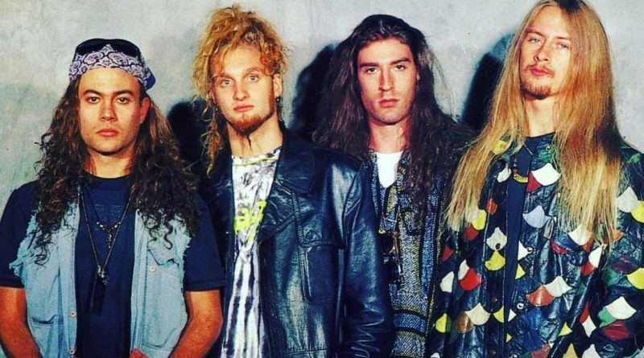
O vocalista Layne Staley, da extinta banda Sleze, morava em um "estúdio-apartamento", chamado de Music Bank (o ponto também funcionava como ponto para plantio clandestino de drogas), enquanto o guitarrista Jerry Cantrell, até então morador de rua, devido à expulsão da casa de seus pais por recusar a Universidade para trabalhar com música.
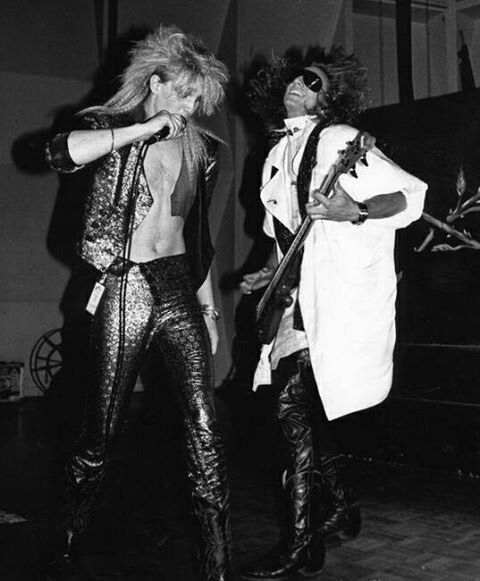
Em um dos shows da Sleze, Jerry Cantrell mostrou-se admirado por Layne Staley e foi conversar com o vocalista. Contou que estava morando na rua e formando uma banda. Então, Layne convidou-o para morar no Music Bank.
Em busca de um baterista, Layne falou sobre Sean Kinney, um conhecido, para Jerry. Curiosamente, a namorada de Sean Kinney era irmã do baixista Mike Starr, formando a banda de forma rápida.
Entretanto, a banda não tinha um vocalista, mas, todos os membros admiravam a técnica de Layne. Então, arranjavam "falsas audições" para vocalistas, na qual chamavam apenas péssimos vocalistas (propositalmente, para irritar Layne até ele aceitar assumir o vocal).
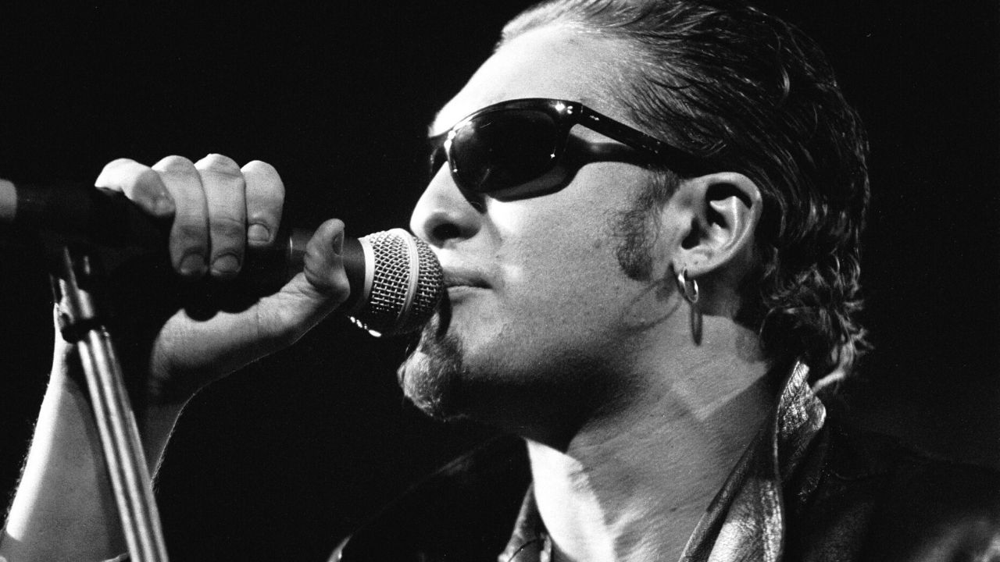
Em um dos testes, o vocalista era tão ruim, que, após 2 meses de testes, Layne expulsou-o do estúdio e assumiu a responsabilidade dos vocais da banda. A partir daí, o Alice in Chains estava formado.
VoltarA banda conta com 6 álbuns e 3 EP's. Sendo os 4 primeiros álbuns e os 3 EP's na "era Layne Staley" (até 2002 em seu falecimento). Os 2 próximos álbuns fazem parte da "era Duvall" (vocalista atual).
Nome dos projetos:
| Álbum/EP | Lançamento | Músicas | Compositores |
|---|---|---|---|
|
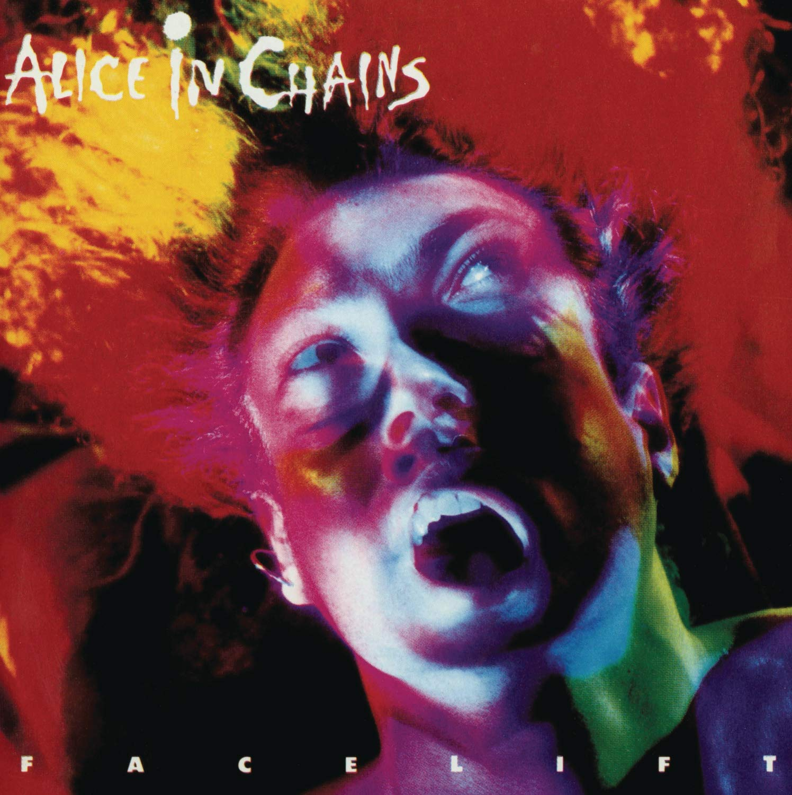 Facelift (álbum) |
1/8/1990 |
MúsicasWe Die Young Sea of Sorrow Bleed the Freak I Can't Remember Love, Hate, Love It Ain't Like That Sunshine Put You Down Confusion I Know Somethin (Bout You) Real Thing |
Layne Staley, Jerry Cantrell, Mike Starr e Sean Kinney. |
|
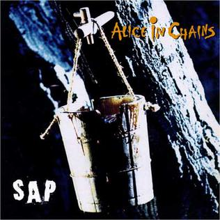 SAP (EP) |
4/2/1992 | Layne Staley, Jerry Cantrell, Mike Starr, Sean Kinney, Chris Cornell(Soundgarden), Ann Wilson (Heart), Mark Arm (Mudhoney). |
|
|
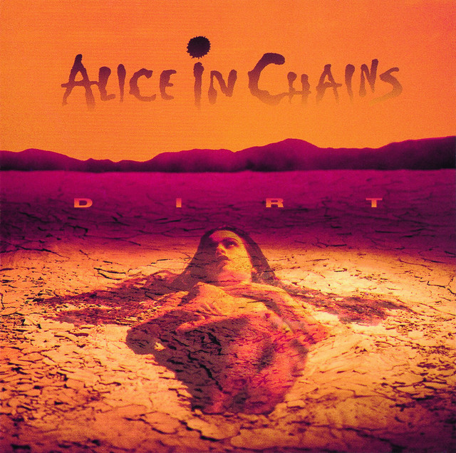 Dirt (álbum) |
29/9/1992 |
MúsicasThem Bones Dam That River Rain When I Die Down In A Hole Sickman Rooster Junkhead Dirt God Smack Untitled Hate to Feel Angry Chair |
Layne Staley, Jerry Cantrell, Mike Starr e Sean Kinney. |
|
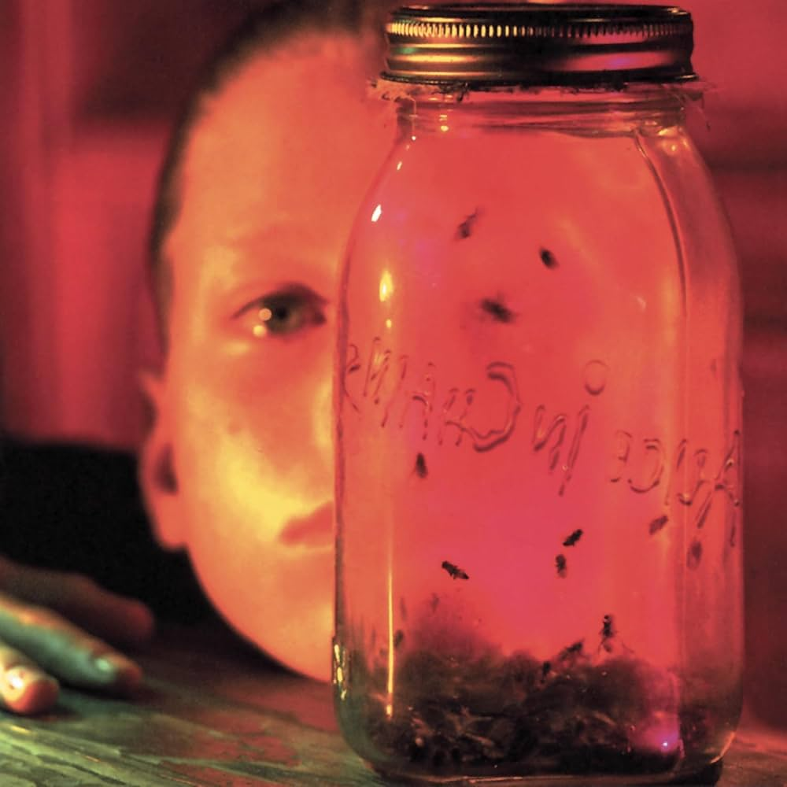 Jar of Flies (EP) |
1/1/1994 | Layne Staley, Jerry Cantrell, Mike Inez e Sean Kinney. | |
|
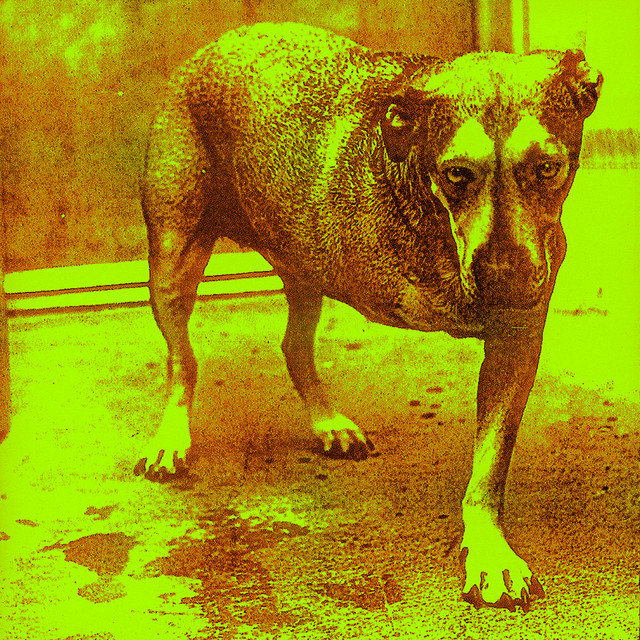 Alice in Chains |
30/10/1995 |
MúsicasGrind Brush Away Heaven Beside You Head Creeps Again Shame In You God Am So Close Nothin' Song Frogs Over Now |
Layne Staley, Jerry Cantrell, Mike Inez e Sean Kinney. |
|
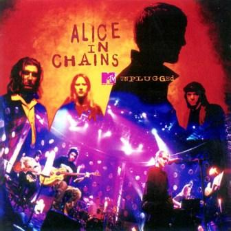 Alice in Chains MTV Unplugged (Ao Vivo) |
29/7/1996 |
MúsicasNutshell - Live Brother - Live No Excuses - Live Sludge Factory - Live Down In A Hole - Live Angry Chair - Live Rooster - Live Got Me Wrong - Live Heaven Beside You - Live Would? - Live Frogs - Live Over Now - Live |
Layne Staley, Jerry Cantrell, Scott Olson, Mike Inez e Sean Kinney |
|
Music Bank (último projeto de Layne Staley) |
1/1/1999 |
MúsicasDisco 1 Get Born Again I Can't Have You Blues - Demo Whatcha Gonna Do - Demo Social Parasite - Demo Queen of the Rodeo - Live Bleed the Freak - Demo Killing Yourself - Demo We Die Young Man in the Box Sea Of Sorrow - Demo I Can't Remember Love, Hate, Love It Ain't Like That Confusion Rooster - Demo Right Turn Got Me Wrong Disco 2 Rain When I Die Fear The Voices Them Bones Dam That River Sickman Rooster Junkhead - Demo Dirt God Smack Iron Gland Angry Chair Lying Session Would? Brother Am I Inside I Stay Away No Excuses Disco 3 Down In A Hole Hate To Feel What the Hell Have I - Remix A Little Bitter - Remix Grind Again - Tattoo of Pain Mix Head Creeps God Am Frogs Heaven Beside You Nutshell - Unplugged The Killer Is Me - Unplugged Over Now - Unplugged Died(última música escrita por Layne Staley). | Layne Staley, Jerry Cantrell, Mike Starr, Mike Inez, Sean Kinney, Johnny Bacolas, Nick Pollock, James Bergstrom, Tommy Murdoch, Susan Silver e Ann Wilson (vários compositores, afinal, Music Bank é uma coletânea com músicas de diversas épocas do Alice In Chains). |
|
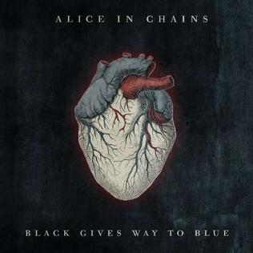 Black Gives Way To Blue |
29/9/2009 |
MúsicasAll Secrets Known Last Of My Kind Your Decision A Looking In View When The Sun Rose Again Acid Bubble Lesson Learned Take Her Out Private Hell Black Gives Way To Blue Black Gives Way To Blue - Piano Mix Your Decision - Live |
William DuVall, Jerry Cantrell, Mike Inez e Sean Kinney. |
|
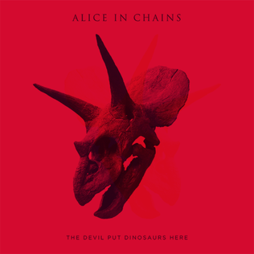 The Devil Put Dinosaurs Here |
28/5/2013 |
MúsicasHollow Pretty Done Voices The Devil Put Dinosaurs Here Lab Monkey Low Ceiling Breath On A Window Scalpel Phantom Limb Hung On A Hook Choke |
William DuVall, Jerry Cantrell, Mike Inez e Sean Kinney. |
|
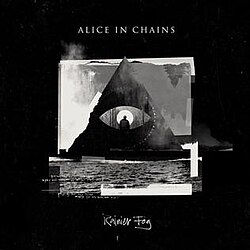 Rainier Fog |
24/8/2018 |
MúsicasRainier Fog Red Giant Fly Drone Deaf Ears Blind Eyes Maybe So Far Under Never Fade All I Am |
William DuVall, Jerry Cantrell, Mike Inez e Sean Kinney. |